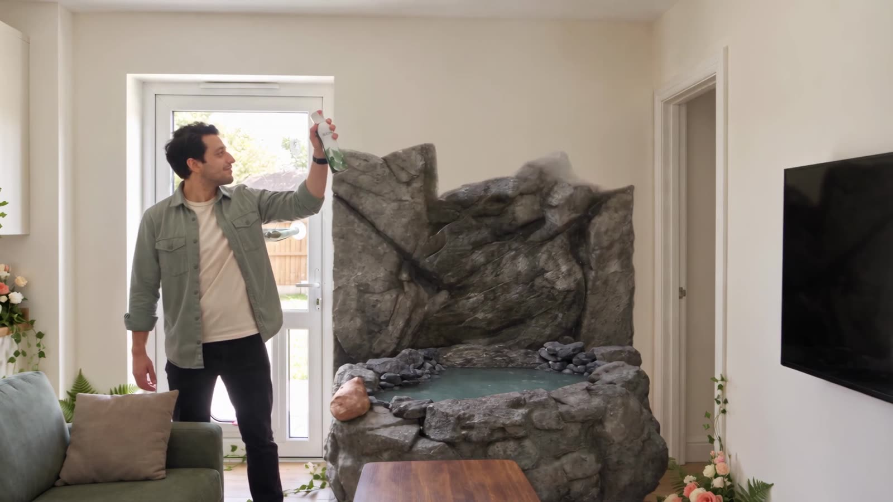
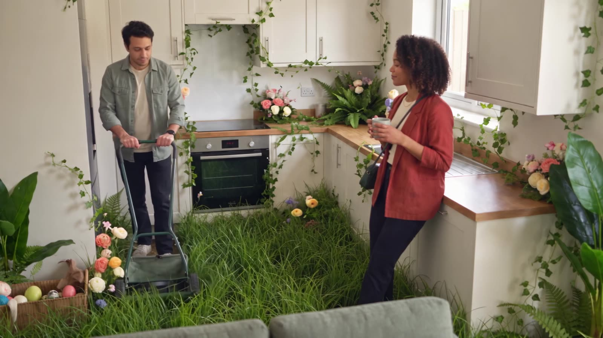

Spec ad · 2026
BLOOM: Too Fresh
A comedy spec ad for a fictional air freshener. OpenArt Ad Awards 2026 entry.
Spec ad. BLOOM is a fictional brand.
The brief
BLOOM: Too Fresh is a comedy spec ad for a fictional air freshener, made as my entry to the OpenArt Ad Awards 2026 (September 2026). Images were made in GPT Image, video in Seedance on OpenArt, and the voiceover and sound were added in post. The budget was $200, so every render had to earn its resolution.
What I did
- Concept for a comedy spot about a fictional air freshener.
- Generated the images in GPT Image and the video in Seedance on OpenArt.
- Added the voiceover and sound in post.
- Ran a resolution ladder to stay inside $200: test everything cheap, pay for resolution only where it shows.
Tools
- GPT Image
- Seedance
- OpenArt
- AI voice & sound in post
The spot
A $200 resolution ladder
Each prompt climbs only as high as the shot needs.
480p
Every prompt tested here first.
720p
Finals.
1080p
Wide shots and shots with text, where resolution shows.
Post
Voiceover and sound added in the edit.
Frames


Results
- total budget
- $200
- every prompt tested before paying for more
- 480p
- only for wide and text shots
- 1080p